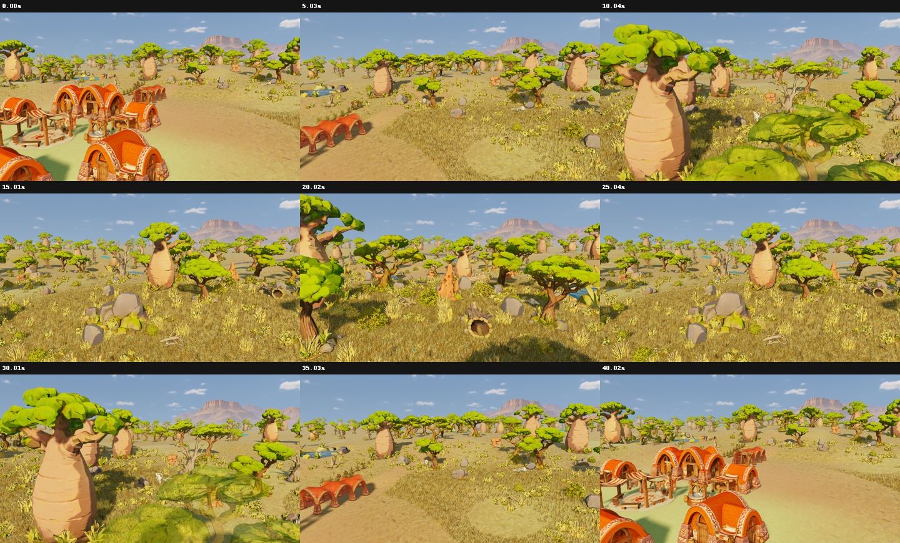
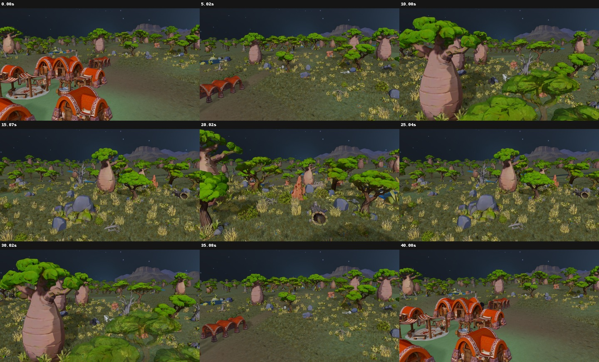
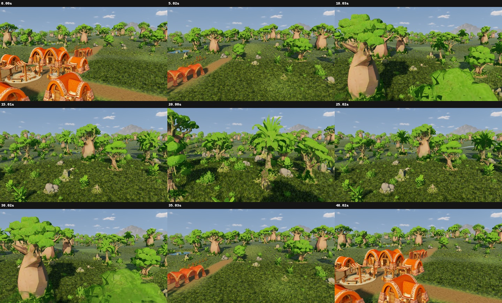
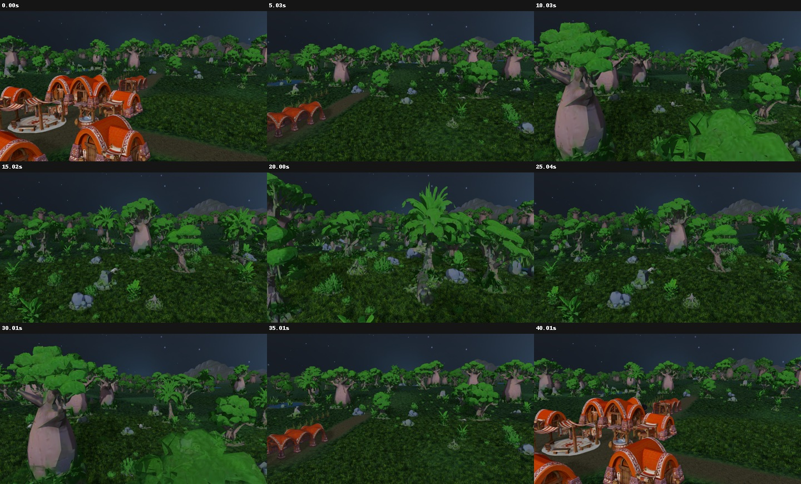
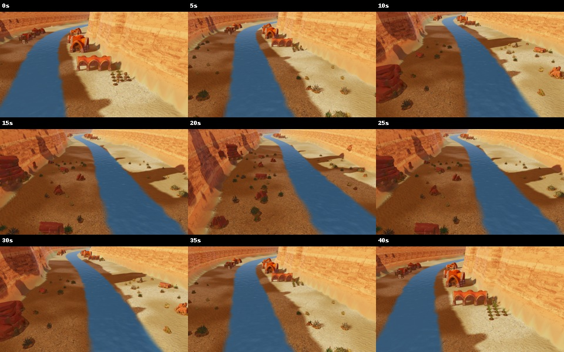
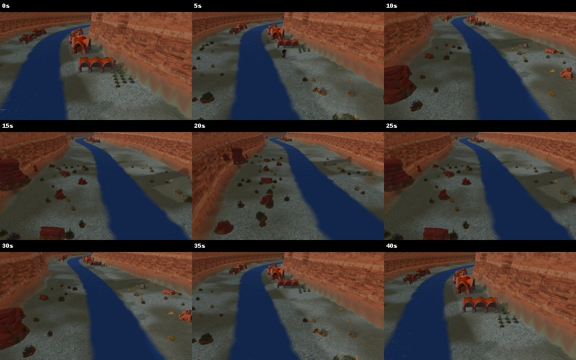

Vídeos reales conservados del 23 de octubre. Son evidencia histórica, anterior a la corrección de residencia nativa del 25. No representan un benchmark actual ni prueban ausencia de errores en todos los recorridos. No se han modificado los vídeos ni las capturas.
Las hojas de contacto se revisaron en nueve posiciones por recorrido. No muestran huecos azules bajo objetos lejanos en esas muestras; no permiten excluir saltos breves entre muestras. Gran Cañón conserva una transición amplia en el pie de pared. Mantener las direcciones aprobadas.
Arranque conjunto orientativo: el navegador no garantiza sincronización exacta.


Arranque conjunto orientativo: el navegador no garantiza sincronización exacta.


Arranque conjunto orientativo: el navegador no garantiza sincronización exacta.

